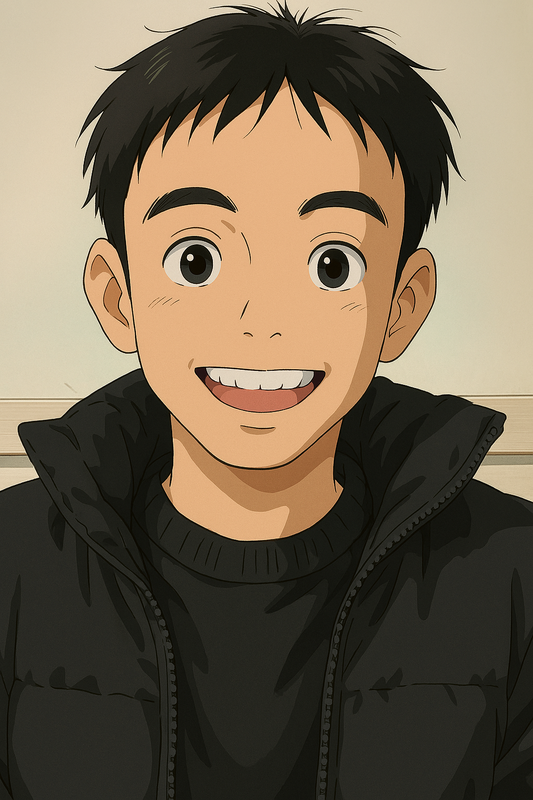
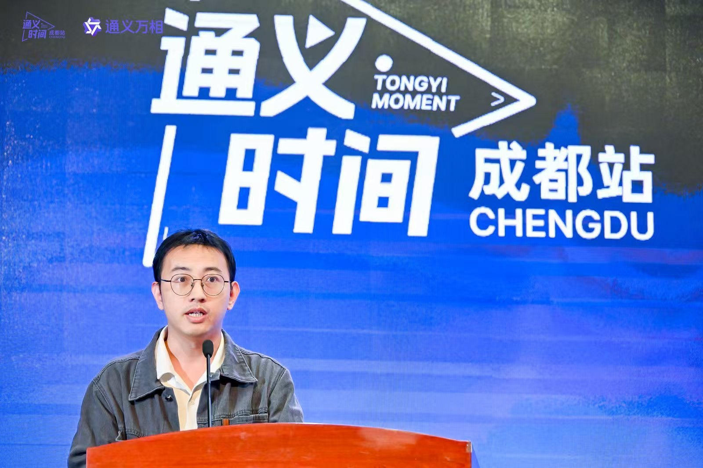
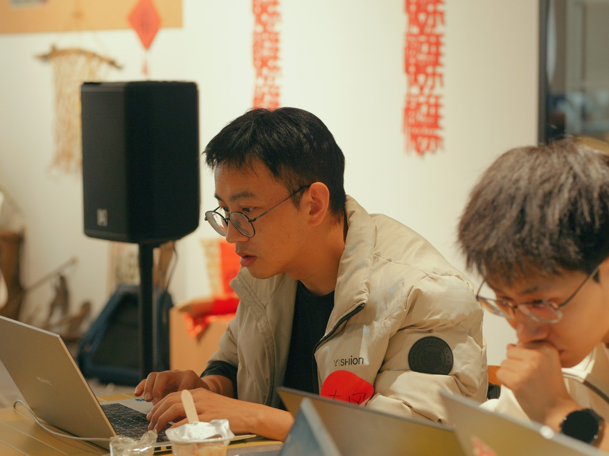
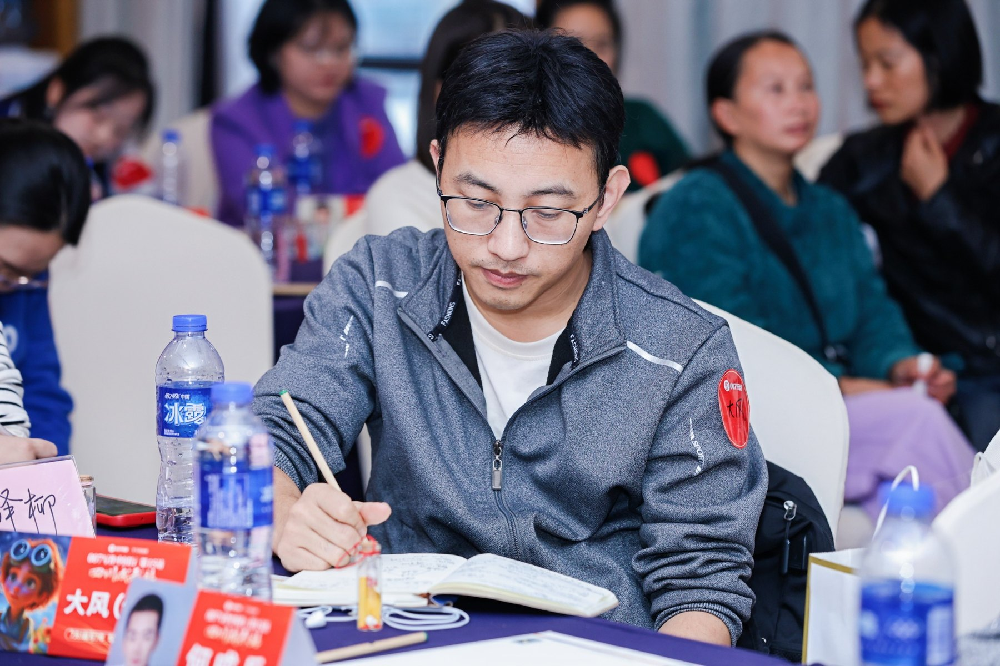
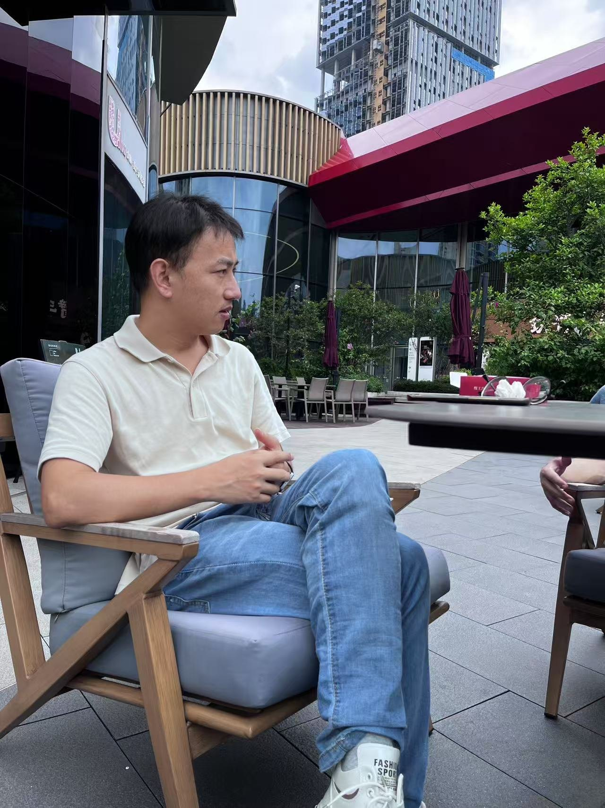
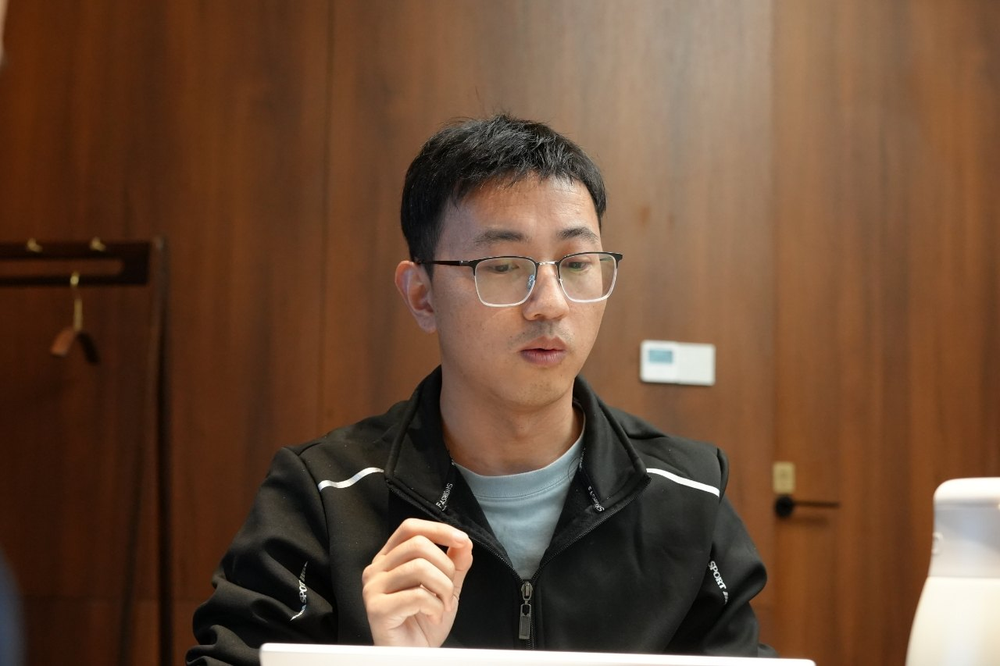

01 / BUILD
AI Native 产品与 Agent
从需求分析、PRD、原型、开发到迭代，探索适合个人创业者与200人以内团队的AI产品和Agent框架。
产品实践 →
我不把自己锁在一个标签里，但所有工作都围绕同一个方向：从真实问题出发，让AI真正进入产品、项目、组织和生活。
围绕AI Native产品、企业工作流和知识系统，我更关注“能不能落地、能不能持续运行、能不能产生价值”。
从需求分析、PRD、原型、开发到迭代，探索适合个人创业者与200人以内团队的AI产品和Agent框架。
记录AI工具、创业实验、城市观察、人物连接和真实生活。不追逐每一个热点，保留长期的判断和行动轨迹。
工具蛙 Frog 面向AI工具与轻产品；AI创客家聚焦青少年AI创造、项目实践和真实作品。
主页不把四个名称并列成四种人格，而是把它们放回正确层级，让新朋友一眼理解你是谁、你在做什么。

公开表达、动手开发、认真记录、与人讨论。比起标准商务摆拍，这些画面更接近我真实工作的方式。




“我不想只做一个介绍自己多厉害的主页，而是留下一个仍在行动、仍在变化的真实入口。”DAFENG AI SLOW JOURNEY · 大风AI慢游记
适合创业团队、200人以内企业与内部部门。先判断真正的问题，再决定应该用工具、工作流、知识库、Agent还是独立产品。

梳理业务问题、用户场景、工作流程和边界，形成可直接指导开发与实施的方案。
围绕真实岗位和项目建立工具链、知识库、自动化流程与使用规范。
从MVP到可持续迭代，关注权限、数据、交付、运营和商业化，而不只是完成Demo。
针对团队的具体任务开展内容课、实操、答疑和项目陪跑，让AI真正进入日常工作。
My interests are less about collecting hobbies and more about learning how systems, strategy, and people behave over time.
I read Chinese poetry and philosophy for language, ideas, and inner perspective, and global history to understand how societies, institutions, and choices evolve over time.
I play Go (Weiqi) and Chinese Chess (Xiangqi). Both sharpen my sense of structure, timing, trade-offs, and long-term strategy.
A popular Chinese partnership card game that combines teamwork, signaling, adaptation, and a healthy dose of fun.
I work best where technology, resources, and execution need to come together. Start with the real constraint, then move the project forward.
Rapid prototyping, AI-assisted development, workflow automation, and practical analysis that turns raw data into decisions.
Connecting product requirements with hardware resources, supplier coordination, sourcing, and delivery considerations.
Connecting projects with suitable AI engineers and development talent based on scope, technical needs, and working style.
Turning an idea into an actionable plan, aligning stakeholders, removing blockers, and keeping delivery moving toward a real outcome.
适合聊AI产品、创业实践、工具与工作流，也欢迎交换成都的活动、项目和有意思的人。